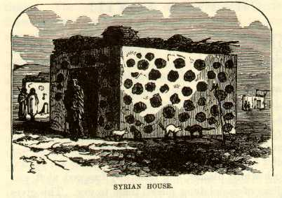

 MagdalaMAGDALA is not a beautiful place. It is thoroughly Syrian, and that is to say that it is thoroughly ugly, and cramped, squalid, uncomfortable, and filthy--just the style of cities that have adorned the country since Adam's time, as all writers have labored hard to prove, and have succeeded. The streets of Magdala are any where from three to six feet wide, and reeking with uncleanliness. The houses are from five to seven feet high, and all built upon one arbitrary plan--the ungraceful form of a dry-goods box. The sides are daubed with a smooth white plaster, and tastefully frescoed aloft and alow with disks of camel-dung placed there to dry. This gives the edifice the romantic appearance of having been riddled with cannon-balls, and imparts to it a very warlike aspect. When the artist has arranged his materials with an eye to just proportion--the small and the large flakes in alternate rows, and separated by carefully-considered intervals--I know of nothing more cheerful to look upon than a spirited Syrian fresco. The flat, plastered roof is garnished by picturesque stacks of fresco materials, which, having become thoroughly dried and cured, are placed there where it will be convenient. It is used for fuel. There is no timber of any consequence in Palestine--none at all to waste upon fires--and neither are there any mines of coal. If my description has been intelligible, you will perceive, now, that a square, flat-roofed hovel, neatly frescoed, with its wall-tops gallantly bastioned and turreted with dried camel-refuse, gives to a landscape a feature that is exceedingly festive and picturesque, especially if one is careful to remember to stick in a cat wherever, about the premises, there is room for a cat to sit. There are no windows to a Syrian hut, and no chimneys. When I used to read that they let a bed-ridden man down through the roof of a house in Capernaum to get him into the presence of the Saviour, I generally had a three-story brick in my mind, and marveled that they did not break his neck with the strange experiment. I perceive now, however, that they might have taken him by the heels and thrown him clear over the house without discommoding him very much. Palestine is not changed any since those days, in manners, customs, architecture, or people. As we rode into Magdala not a soul was visible. But the ring of the horses' hoofs roused the stupid population, and they all came trooping out--old men and old women, boys and girls, the blind, the crazy, and the crippled, all in ragged, soiled and scanty raiment, and all abject beggars by nature, instinct and education. How the vermin-tortured vagabonds did swarm! How they showed their scars and sores, and piteously pointed to their maimed and crooked limbs, and begged with their pleading eyes for charity! We had invoked a spirit we could not lay. They hung to the horses's tails, clung to their manes and the stirrups, closed in on every aide in scorn of dangerous hoofs--and out of their infidel throats, with one accord, burst an agonizing and most infernal chorus: "Howajji, bucksheesh! howajji, bucksheesh! howajji, bucksheesh! bucksheesh! bucksheesh!" I never was in a storm like that before. |